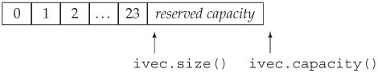

9.4. How a vector Grows
When we insert or push an element onto a container object, the size of that object increases by one. Similarly, if we resize a container to be larger than its current size, then additional elements must be added to the container. The library takes care of allocating the memory to hold these new elements.
Ordinarily, we should not care about how a library type works: All we should care about is how to use it. However, in the case of vectors, a bit of the implementation leaks into its interface. To support fast random access, vector elements are stored contiguouslyeach element is adjacent to the previous element.
Given that elements are contiguous, let's think about what happens when we add an element to a vector: If there is no room in the vector for the new element, it cannot just add an element somewhere else in memory because the elements must be contiguous for indexing to work. Instead, the vector must allocate new memory to hold the existing elements plus the new one, copy the elements from the old location into the new space, add the new element, and deallocate the old memory. If vector did this memory allocation and deallocation each time we added an element, then performance would be unacceptably slow.
There is no comparable allocation issue for containers that do not hold their elements contiguously. For example, to add an element to a list, the library only needs to create the new element and chain it into the existing list. There is no need to reallocate or copy any of the existing elements.
One might conclude, therefore, that in general it is a good idea to use a list rather than a vector. However, the contrary is usually the case: For most applications the best container to use is a vector. The reason is that library implementors use allocation strategies that minimize the costs of storing elements contiguously. That cost is usually offset by the advantages in accessing elements that contiguous storage allows.
The way vectors achieve fast allocation is by allocating capacity beyond what is immediately needed. The vector holds this storage in reserve and uses it to allocate new elements as they are added. Thus, there is no need to reallocate the container for each new element. The exact amount of additional capacity allocated varies across different implementations of the library. This allocation strategy is dramatically more efficient than reallocating the container each time an element is added. In fact, its performance is good enough that in practice a vector usually grows more efficiently than a list or a deque.
9.4.1. capacity and reserve Members
The details of how vector handles its memory allocation are part of its implementation. However, a portion of this implementation is supported by the interface to vector. The vector class includes two members, capacity and reserve, that let us interact with the memory-allocation part of vector's implementation. The capacity operation tells us how many elements the container could hold before it must allocate more space. The reserve operation lets us tell the vector how many elements it should be prepared to hold.
 | It is important to understand the difference between capacity and size. The size is the number of elements in the vector; capacity is how many it could hold before new space must be allocated. |
To illustrate the interaction between size and capacity, consider the following program:
vector<int> ivec;
// size should be zero; capacity is implementation defined
cout << "ivec: size: " << ivec.size()
<< " capacity: " << ivec.capacity() << endl;
// give ivec 24 elements
for (vector<int>::size_type ix = 0; ix != 24; ++ix)
ivec.push_back(ix);
// size should be 24; capacity will be >= 24 and is implementation defined
cout << "ivec: size: " << ivec.size()
<< " capacity: " << ivec.capacity() << endl;
When run on our system, this program produces the following output:
ivec: size: 0 capacity: 0
ivec: size: 24 capacity: 32
We know that the size of an empty vector is zero, and evidently our library also sets capacity of an empty vector to zero. When we add elements to the vector, we know that the size is the same as the number of elements we've added. The capacity must be at least as large as size but can be larger. Under this implementation, adding 24 elements one at a time results in a capacity of 32. Visually we can think of the current state of ivec as

We could now reserve some additional space:
ivec.reserve(50); // sets capacity to at least 50; might be more
// size should be 24; capacity will be >= 50 and is implementation defined
cout << "ivec: size: " << ivec.size()
<< " capacity: " << ivec.capacity() << endl;
As the output indicates, doing so changes the capacity but not the size:
ivec: size: 24 capacity: 50
We might next use up that reserved capacity as follows:
// add elements to use up the excess capacity
while (ivec.size() != ivec.capacity())
ivec.push_back(0);
// size should be 50; capacity should be unchanged
cout << "ivec: size: " << ivec.size()
<< " capacity: " << ivec.capacity() << endl;
Because we used only reserved capacity, there is no need for the vector to do any allocation. In fact, as long as there is excess capacity, the vector must not reallocate its elements.
The output indicates that at this point we've used up the reserved capacity, and size and capacity are equal:
ivec: size: 50 capacity: 50
If we now add another element, the vector will have to reallocate itself:
ivec.push_back(42); // add one more element
// size should be 51; capacity will be >= 51 and is implementation defined
cout << "ivec: size: " << ivec.size()
<< " capacity: " << ivec.capacity() << endl;
The output from this portion of the program
ivec: size: 51 capacity: 100
indicates that this vector implementation appears to follow a strategy of doubling the current capacity each time it has to allocate new storage.
| Each implementation of vector is free to choose its own allocation strategy. However, it must provide the reserve and capacity functions, and it must not allocate new memory until it is forced to do so. How much memory it allocates is up to the implementation. Different libraries will implement different strategies. |
Moreover, every implementation is required to follow a strategy that ensures that it is efficient to use push_back to populate a vector. Technically speaking, the execution time of creating an n-element vector by calling push_back n times on an initially empty vector is never more than a constant multiple of n.
| Exercise 9.29: | Explain the difference between a vector's capacity and its size. Why is it necessary to support the notion of capacity in a container that stores elements contiguously but not, for example, in a list?
| | Exercise 9.30: | Write a program to explore the allocation stragegy followed by the library you use for vector objects.
| | Exercise 9.31: | Can a container have a capacity less than its size? Is a capacity equal to its size desirable? Initially? After an element is inserted? Why or why not?
| | Exercise 9.32: | Explain what the following program does:
vector<string> svec;
svec.reserve(1024);
string text_word;
while (cin >> text_word)
svec.push_back(text_word);
svec.resize(svec.size()+svec.size()/2);
If the program reads 256 words, what is its likely capacity after it is resized? What if it reads 512? 1,000? 1,048?
|
|
|